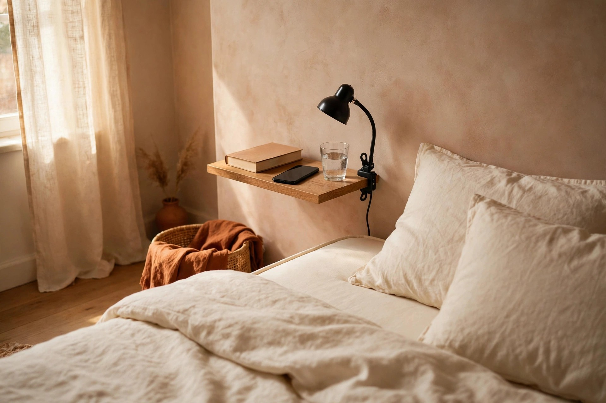

Small Bedroom
Small Bedroom Nightstand Ideas When There Is No Space
Intro
A nightstand is useful — phone, book, water, charger — but in a small bedroom there is often no floor space for one. The good news is that a nightstand does not have to stand on the floor. A shelf, a tray, a stool or a pocket on the wall can do the same job in a fraction of the space.
This guide has 12 nightstand alternatives for tiny bedrooms. Each one holds the essentials — phone, book, water — and most cost $0–$20. None of them needs a full 40 cm of floor space.

1. A floating shelf beside the bed — $10–$15
One small floating shelf, 30 cm wide, at mattress height. It holds a phone, a book and a glass of water, and nothing touches the floor. If you rent, use adhesive brackets rated for 5 kg. This is the closest thing to a real nightstand.
2. A clip-on bedside tray — $12–$18
A tray that clips onto the side of the bed frame. It folds flat when you do not need it, and holds a phone and a book when you do. No floor space at all, and it moves with the bed.
3. A stool as a nightstand — $10–$20
A small wooden stool, 30 cm across, does the job of a nightstand and doubles as a seat. Put a tray on top so small things do not fall off. A stool is lighter and narrower than a nightstand, so it fits in gaps a table cannot.
4. A hanging pocket organiser — $8–$12
A fabric pocket organiser that hangs from the side of the bed or on the wall. Pockets hold a phone, a book, glasses and a charger. It costs almost nothing, uses no floor space, and keeps everything within reach.
5. A wall-mounted cup holder + shelf — $8–$15
A small shelf with a cup holder underneath, screwed or stuck to the wall beside the bed. The shelf holds the phone, the cup holder holds the water glass. Two small things, one small footprint.
6. The windowsill as a nightstand — $0
If the bed is under the window, the windowsill is already a nightstand. Add a small tray so the phone does not slide, and keep a book there. Free, and it uses space that is doing nothing.
7. A stack of books as a nightstand — $0
Three or four hardback books stacked on the floor beside the bed, with a tray on top. It holds a phone and a glass, costs nothing, and looks intentional if the books are tidy. Not ideal for a full glass of water — use a bottle instead.
8. A bedside caddy that slides under the mattress — $10–$15
A fabric caddy with pockets that slides under the mattress and hangs down the side of the bed. It holds a phone, a remote, a book and a charger cable. It is invisible when the bed is made, and it takes zero floor space.
9. A narrow wall shelf above the pillow — $10–$15
A shelf mounted 30 cm above the pillow, out of the way of your head. It holds a book and a phone, and a small clip-on lamp can hang from it too. Keep it shallow — 15 cm deep is enough.
10. A crate on its side — $5–$10
A wooden crate turned on its side beside the bed, open side facing out. It holds a book and a phone on top, and a pair of slippers inside. One crate, two jobs, and it costs less than a takeaway.
11. A tray on the bed itself — $8–$12
A bed tray with folding legs that sits on the mattress. It holds a book, a phone and a cup, and folds flat under the bed in the morning. It is not a permanent nightstand, but for a very small room it is the most flexible option.
12. Share one nightstand between two sides — $0
If only one side of the bed has space, put one nightstand there and share it. A two-tier nightstand holds both people's phones and books — top tier for one person, bottom tier for the other. It is not perfect, but it is better than nothing on either side.
Conclusion
A nightstand is a surface, not a piece of furniture. A shelf, a tray, a stool or a pocket does the same job in less space, and most of them cost under $15. Pick the one that fits your gap — even a 15 cm gap is enough for a floating shelf — and keep only the three essentials on it: phone, book, water.
Budget recap
- Floating shelf: ~$12
- Hanging pocket organiser: ~$10
- Clip-on tray: ~$15
- **Total for a full bedside setup: ~$37 — no floor space needed.**
Pinterest pin titles (3 fresh pins, same article, different designs)
- ""Small Bedroom Nightstand Ideas When There Is No Space""
- ""No Room for a Nightstand? 12 Ideas That Fit Anywhere""
- ""12 Nightstand Alternatives for Tiny Bedrooms — Under $20""